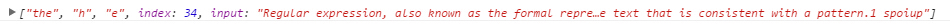
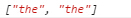

Regular expression, also known as the formal representation of a conventional method, said method (English: regular expression, in the code often abbreviated as regex, regexp or re), computer science a concept. Regular expressions use a single string to describe, match a series of strings that conform to a syntax rule. In many text editors, regular expressions are often used to retrieve and replace text that is consistent with a pattern.1 spoiup
能用正则的几个方法：exec(),test(),match(),replace(),search(),split()
方法
match
match(/t(h)(e)/)
不带g，返回一个数组，第0个是匹配的文本，其余是子表达式的内容，最后是一个是index，对应找到字符的位置，一个input是原来的字符串。一个参数可以传字符串，字面量正则表达式，构造函数。

match(/t(h)(e)/g)
带g就没有其他信息了，只有全局匹配到的内容。

规则
[]：中括号内匹配可以是任意其中的一个字符，里面的是单个字符不是一组，里面的元字符都是普通字符。
[^]：中括号内第一个字符带^，说明是反过来的，只要不匹配里面的任意字符就返回。^貌似只能写在中括号里面而且是第一位，其他情况有问题。
\w：匹配所有大小写英文字母和所有数字加下划线。
\W：匹配所有非大小写英文字母和所有数字加下划线。
\s：匹配所有Unicode空白符。
\S：匹配所有非Unicode空白符。
\d：匹配所有数字。
\D：匹配所有非数字。
匹配优先量词：*，+，?，{num,num}
+：加号的意思是加号前面的连着的是可以重复的，不论是单个还是一类，比如\w，\s，就英文重复，或是空白符重复，至少匹配1次。
{n,m}：至少重复n次最多重复m次。
{n,}：至少匹配n次，最多不限。
{n}：正好匹配n次
?：可选项，没有就返回空，有就批次一次。（和*一样匹配当前位置的，有就有，没有就没有）
*：匹配0次货多次（和？一样匹配当前位置的，有就有，没有就没有）
忽略优先量词：*?，+?，??，{num,num}?
*?与*对应
ni hao shanghai beijing tianjing hangzhou shanghai
+?与+对应
abccccccc222
??与?对应
string to describe
{num,num}?与{num,num}对应
abbbbbbc2
.：点可以匹配任何的字符
\b：匹配单词的边界。
\B：不匹配单词的边界
ben@forta.com ben.forta@forta.com support@forta.com ben@urgent.forta.com spam@forta.com
()：子表达式，把括号里面的作为一个整体来匹配。
[]里面，元字符都变成了普通字符，除了\-]
回溯引用：\1,\2,\3...，引用第几个子表达式的规则匹配。
h1aaaaaaaaah1h2bbbbbbbbbbbh2h3ccccccccccccch3
string.replace(regexp,replacement)
参数：regexp可以是一个字符串，也可以是一个正则表达式。replacement可以是一个字符串，也可以是一个函数，如果是函数的话，第一个参数输匹配的文本，第二个到第n个是捕捉分组匹配到的文本。
with a pattern the Regular expression
$1,$2...$99：与regexp中第一个到第99个子表达式想匹配的文本。
$&：与regexp相匹配的子串，不是括号里的，而是整个正则表达式。
$`：匹配子串左侧的文本。
$'：匹配子串右侧的文本。
$$：转义$直接量。
环视：肯定顺序环视(?=)，否定顺序环视(?!)
javascript不支持逆序环视也就是向后查找(?<=......)
一般来说，凡是提取有长度特征的数据，都需要用到环视，还有时候，可以在匹配的同时以环视加以限制，达到双管齐下的效果，环视真正牛逼的地方是达到and的效果，|是或的作用，而和就是用环视来达到的。因为他完全不影响后面的匹配，后面的匹配还是从原来的位置开始。环视不会真正改变匹配的位置，每个环视判断完成，下一个直接的环视仍然从字符串的起始位置开始匹配。
环视的括号不影响分组捕获，但环视里面出现了括号就会影响分组捕获，而且环视结构中的捕获括号一旦匹配完成就不能回溯。
http:www.forta.com
123456789
-：字符组里面的元字符，如果出现在字符组的开头就是一个普通的字符，结尾也是一样。
asdf
[^]：^必须放在开头，否则在字符组里是普通字符，他表示匹配一个未列出的字符，而不是不要比配列出的字符，意思是匹配的那个位置后面必须有东西，像上面没有东西就返回null。
(?:...)：?:这个所在的括号就不会被捕获。
匹配规则1：优先选择最左端的匹配结果
匹配先从需要查找的字符串的起始位置尝试匹配，在当前位置测试整个正则表达式能匹配的每样文本，如果在当前测试了所有的可能之后不能找到匹配结果，那就开始字符串的下一个位置的匹配，反正每个位置整个表达式都要过一遍。
The dragging belly indicates your cat is too fat
虽然fat在表达式的最开头但belly是最先匹配成功的（从字符串的最左边开始匹配）
匹配规则2：标准量词是匹配优先的
Copyright 2003.
*量词优先先匹配成功整个表达式然后交出最后一个数字虽然有+量词优先原则，但前面已经有量词出现了，所以就有先来先服务的概念，+量词只能完成最低匹配。
正则有2种引擎，一种NFA，一种DFA，我们现在用到的是NFA，NFA最重要的特点就是回溯。NFA匹配的原则就是不放过任何可能性，是表达式主导，而DFA是文本主导，表达式不一定会全都走完。
tagabcqwe
字符组里面的都是单个字符，不是连起来的，排除也是一样的，排除的是单个字符而不是连起来的单词。
]}单独使用不是元字符，只有配对使用的时候才是元字符。
]1}
/^...$/行首行尾是正好匹配某段字符串，szm匹配szm不会匹配i am szm yeah。
aa bb cc dd